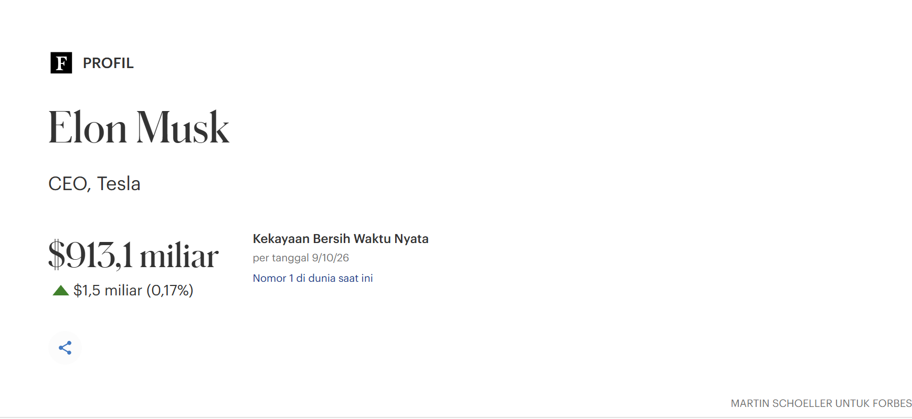

Dibalik SosokTerkarya Dunia
SpaceX, Tesla, Starlink, Neuralink, X
Elon Musk dikenal sebagai salah satu figur penting di balik perubahan besar dalam industri teknologi modern dunia. Lewat Tesla, ia berhasil membuat industri otomotif dunia menuju ekosistem energi bersih dan kendaraan listrik massal lebih efisien. Di saat yang sama, SpaceX, fokus utamanya berpusat pada peluncuran roket yang bisa digunakan berulang kali agar perjalanan ke luar angkasa menjadi lebih terjangkau

Kekayaan Elon Musk
Menembus angka fantastis $913,1 miliar, kekayaan bersih Elon Musk mencatatkan rekor tertinggi dalam sejarah sebagai orang nomor satu terkaya di dunia. Lonjakan kapitalisasi masif ini didorong oleh melesatnya valuasi roket SpaceX di pasar antariksa global, pertumbuhan ekosistem kendaraan listrik Tesla. Bagi Elon, nilai aset sebesar ini difungsikan sebagai bahan bakar modal utama untuk mendanai ambisi peradaban masa depan berkelanjutan
Fokus CEO
Pemilik perusahaan ternama dunia.

SpaceX Falcon 9 & Starship
Mengembangkan roket kelas orbital yang dapat digunakan kembali untuk memangkas biaya akses orbit bumi dan mewujudkan perjalanan ke Mars.

Tesla
Mendorong akselerasi mobilitas listrik global massal, jaringan pengisian daya Supercharger, dan sistem kecerdasan otonom FSD.
Starlink Global Network
Jaringan konstelasi ribuan satelit orbit rendah bumi untuk memancarkan akses internet kecepatan tinggi tanpa batasan geografis.
Karya & Inovasi
Membangun Solusi Rekayasa dan Teknologi Berskala Global


Sampaikan Aspirasi
Punya ide kolaborasi, kritik, atau sekadar ingin menyapa? Kirimkan pesanmu di bawah ini.